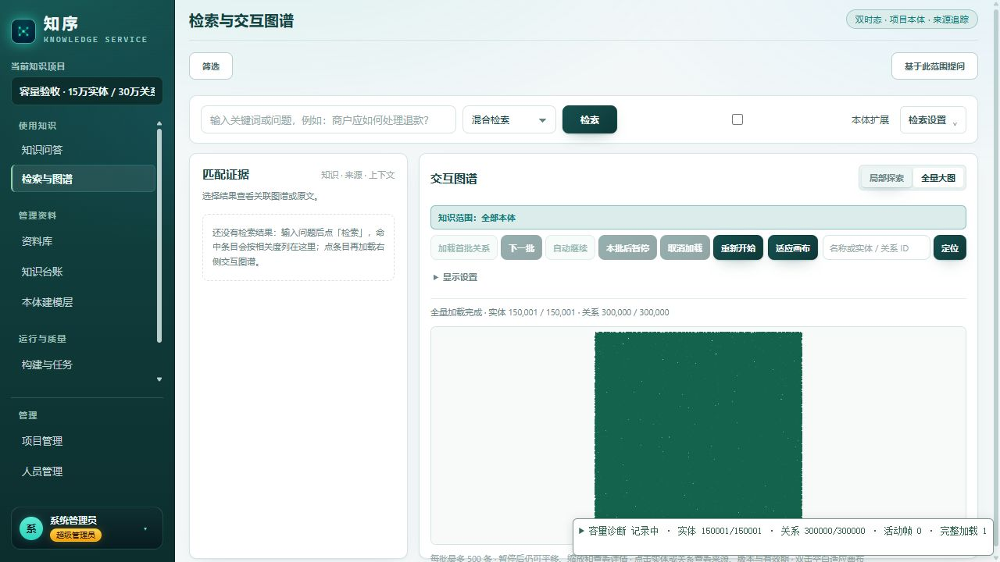

15 万节点，重新认证
真实应用、保留项目、PostgreSQL 权威存储及 Milvus 向量检索。分别核对完整性、交互流畅度、查询延迟、正式写入与持续稳定性。
全量图谱可以加载并持续运行；检索、点选详情、完整加载与单条正式写入仍存在明显延迟。不能据“能画出 15 万点”宣称整体性能达标。
逐项验收
| 指标 | 目标 | 实测 | 判定 |
|---|---|---|---|
| 全量实体/关系完整性 | 150001 / 300000，唯一、无悬空 | 150,001 实体 / 300,000 关系；重复与悬空均为 0 | 通过 |
| 完整加载 | ≤30 秒 | 活动加载 228.9s；墙钟 320.9s（含暂停）；N=1 | 未通过 |
| 活动帧间隔 P95 | ≤33ms | 16.8ms；1,223 个活动样本 | 通过 |
| 点选到详情可见 | ≤200ms | 19 次成功 P95 3803.1ms；20 次尝试中 1 次未在 15s 窗口内观察到详情身份 | 未通过 |
| JS 堆峰值 | ≤1.5GiB | 185.4MiB，仅 JS 堆 | 通过 |
| 浏览器 RSS | ≤3GiB | 工具未提供浏览器 RSS，不能据 JS 堆推断 | 未认证 |
| 满载连续观察 | ≥30 分钟，无计数漂移/上下文丢失/脚本错误 | 30.3 分钟；计数漂移 0；WebGL 上下文丢失 0；脚本错误 0 | 通过 |
达标仅对这次列明的样例、设备与观测范围有效；未取得的指标保留“未认证”。
正常服务的 HTTP 延迟与可用性
预热后每类 20 次，P95 用最近秩计算，失败单列；4 并发为 20 个总请求。以下均通过真实 HTTP 路由。
语义与混合检索各20次全部503，提示“Milvus 投影未就绪或落后于权威版本”。没有成功样本P95，不能把快速拒绝算作性能达标。详情与分页仍通过。
| 操作 | N | P50 / 秒 | P95 / 秒 | 最大 / 秒 | 失败 | ≤2s |
|---|---|---|---|---|---|---|
| 实体详情 最终重启复核 | 20 | 0.426 | 0.671 | 1.664 | 0 | 通过 |
| 实体分页（20 条） 最终重启复核 | 20 | 0.125 | 0.203 | 0.215 | 0 | 通过 |
| 精确记录筛选 早期正常服务 | 20 | 0.218 | 0.670 | 0.696 | 0 | 通过 |
| 关键词筛选 早期正常服务 | 20 | 3.472 | 4.099 | 4.731 | 0 | 未通过 |
| 实体修订历史 早期正常服务 | 20 | 0.032 | 0.129 | 0.234 | 0 | 通过 |
| 1 跳邻域 早期正常服务 | 20 | 3.400 | 6.089 | 6.495 | 0 | 未通过 |
| Milvus 语义检索 最终重启复核 | 20 | — | — | — | 20 | 未通过 |
| 混合检索 最终重启复核 | 20 | — | — | — | 20 | 未通过 |
| 图谱会话清单 早期正常服务 | 20 | 3.333 | 4.243 | 5.842 | 0 | 未通过 |
| 4 并发语义检索 早期正常服务 | 20 | 8.691 | 24.075 | 24.236 | 0 | 未通过 |
写入前的早期正常服务：语义P95=5.744s、混合P95=7.371s，各20次成功，Milvus、degraded=false；首个语义预热106.593s另列。这些与最后的503属于不同阶段，不能混为一组。3跳/10跳各3次探索最大2.373s /42.396s，非独立20次认证。
04:44–04:48的独立只读检查：权威序号29，游标处于rebuilding（snapshot/applied23），旧Milvus目标有450,001物理行、17个索引完成，标记最大仅13。重建状态的applied23不等于旧目标已追平到23。诊断写入期间已经记录ProjectionLeaseLost。04:48:45同一构建又有合法租约与450,001个持久快照ID，因此不能认定永久无人运行，也不重复启动或强改ready标记。详见投影一致性JSON。
全量图谱：能加载，等待时间未达标
首批可见约 4.0 秒。一次完整加载墙钟约 320.9 秒，其中约 92 秒为首批后人工/自动化暂停；累计活动加载约 228.9 秒。共 1,126 次 next/page 调用。只测完整加载 1 次，没有全图 P95。
已核对加载器逐页await后继续：1,126个分页HTTP平均约172.4ms，累计约194.2s；它包含服务、传输和调度。Renderer.sync的CPU方法平均17.264ms、P95 44.9ms，draw平均0.117ms。分页链路的累积等待明显；这些不同范围的耗时不能当作互斥分账相加，GPU完成耗时未测。

完成时独立扫描核对了唯一 ID 与边端点，重复实体、重复关系、悬空关系均为 0；关系缓存 300,000，WebGL error=0。活动帧与点选分别统计：帧流畅不代表后端详情和后续证据能及时返回。
单条写入为什么会慢
专用测试实体的每次普通修改仍做两次项目级快照，合计读取 900,002 行当前记录。首个修改的约 173 秒中，快照约 119 秒、预留操作时间约 26 秒，编码约 0.67 秒，实际动作约 0.94 秒。下列阶段有嵌套，不能相加。
| 请求 ID 前缀 | 状态 | HTTP / 秒 | 两次快照 | 其中全量记录 | 预留操作 | 编码 | 动作执行 | 投影推进 |
|---|---|---|---|---|---|---|---|---|
3c3246b2 | 200 | 173.081 | 118.567 | 106.440 | 26.167 | 0.666 | 0.938 | 14.019 |
5b4c50d4 | 409 | 163.035 | 129.085 | 113.391 | 25.380 | 0.486 | 0.052 | — |
6aae96ec | 200 | 202.995 | 153.380 | 139.762 | 22.623 | 0.589 | 0.795 | 14.854 |
9c6ba3c8 | 200 | 253.920 | 124.103 | 156.180 | 24.989 | 0.620 | 0.441 | 94.127 |
dd874ede | 200 | 246.635 | 143.521 | 197.549 | 26.265 | 0.570 | 0.315 | 67.235 |
0be82e26 | 200 | 215.602 | 127.698 | 165.027 | 26.468 | 1.052 | 0.243 | 50.757 |
0fda32a8 | 200 | 159.467 | 91.932 | 119.312 | 19.636 | 0.452 | 0.212 | 40.229 |
2a2e2f5e | 200 | 276.168 | 89.115 | 99.426 | 23.925 | 0.630 | 0.142 | 153.834 |
2c75b968 | 200 | 218.795 | 86.962 | 74.513 | 15.602 | 0.368 | 0.176 | 59.144 |
f6d3bef1 | 200 | 177.115 | 80.588 | 71.297 | 21.078 | 0.709 | 0.206 | 67.307 |
f08b92cf | 200 | 198.765 | 98.170 | 87.116 | 23.566 | 0.473 | 0.186 | 69.368 |
旧版本修改虽然正确返回 409，却在两次快照和预留操作之后才检查单记录 CAS：首次拒绝也等了约 163 秒。该拒绝动作阶段只查版本，未写入新业务版本。应在正式写入设计中尽早检查版本，并缩小快照与临界区；本轮未实施这些优化。
普通服务复核：普通服务投影维护仍在运行，未追加普通服务写入样本；无仪表写入延迟列为未认证。诊断轮5对修改/恢复验证了PG/CAS，未验证写后Milvus追平。
资源争用、应用锁与数据库锁分别看
已关联的本体请求约 81.97 秒，其中约 81.68 秒在等待应用 writer RLock；锁拥有者正是恢复 PUT。证据请求也观察到约 81.55 秒应用锁等待。独立 reader 的关联锁等待最大仅约 9µs（首阶段 516 次），说明不同读取路径表现不同。
| 观察窗口 | 资源样本 | CPU 中位 / P95 | 最少可用内存 | 服务 RSS 峰值 | PG 样本 | 有 blockers / 未授予锁样本 |
|---|---|---|---|---|---|---|
| capacity-normal-observer.jsonl | 1780 | 100.0 / 100.0% | 2.81GiB | 1.94GiB | 1736 | 0 / 0 |
| capacity-audited-observer.jsonl | 2195 | 100.0 / 100.0% | 1.01GiB | 5.37GiB | 2174 | 0 / 0 |
首 3 次 PUT 的 540 个 PostgreSQL 样本未见 Lock wait、阻塞 PID 或未授予锁，采样最大间隔约 1.45 秒；不能排除更短暂等待。实际持有 ShareRowExclusiveLock，且存在较长事务，因此“未见等待”不等于“没有锁”。ClientWrite 与 idle in transaction / ClientRead 表明网络传输和客户端处理间隙存在，不能把驱动 execute 墙钟全算作数据库计算。
主机 32GiB、16 逻辑核的共享测试环境。主机 CPU 多次接近 100%；Milvus 单次 Docker 采样约 891% CPU。资源压力是测试条件，尚不足以替代代码阶段计时确定全部因果。
数据保留、测试边界与复查
测试项目继续保留在项目管理中：容量验收 · 15万实体 / 30万关系（保留测试）。普通API复核150,001实体、300,000关系，测试实体原可写字段已恢复，修订5→15。健康检查200，但语义检索503；“保留数据”与“检索可用”分别判定。新鲜页面另记录初始化提示 syncGeneratedIri is not defined，项目卡片仍可查看数量，本轮未修复该UI问题。
- 正常 HTTP 延迟：固定样例，每类预热后 20 次；最近秩 P95；不代表随机查询分布或更多并发用户。
- normal-http-read-v2 在完成所列 20 次采样类别后人为停止更深跳数校准；取消不是 HTTP 业务失败。
- 全图只有 1 次完整加载；墙钟包含约 92 秒人工/自动化暂停，应同时看约 229 秒活动加载，均超过 30 秒；没有全图 P95。
- 全图使用正常服务；后台清单和并发检索测试部分时段与全图校准重叠。持续观察期间叠加诊断写入与少量深邻域请求。
- 3/10 跳各 3 次为并行负载下探索结果，不能作为 20 次独立热测认证。
- 活动帧指标是受信任鼠标操作附近的 rAF 间隔，并非 GPU 帧耗时；点选计时到基础实体身份可见，不包含后续证据/本体历史加载。
- 整个浏览器观测窗口还记录了 67 次主线程长任务（P95 91ms、最大 183ms），非活动 rAF 最大间隔 4133.3ms；活动帧达标不等于整个流程绝无停顿。
- 点选成功样本 P95 单列；1/20 在 15 秒诊断窗口内未观察到所选实体详情身份，计为超时，未与服务日志中的具体请求唯一关联。
- JS 堆不是浏览器/显存总占用；RSS 未测，不判通过。浏览器诊断包装有额外开销，最终完整性扫描约 87ms。
- 诊断服务记录同步阶段耗时与锁归属；嵌套阶段不能相加，driver execute 不能称为纯 SQL 执行时间。
- 主机与 Docker 为共享资源环境，CPU/内存压力会影响墙钟；交换文件占用不等于发生了换页 I/O。
- 共享工作区在测试期间存在外部源码更新；已运行的服务无热重载。早期正常服务、诊断服务、最终重启后的复核分别保留 PID 与 OpenAPI 指纹，不把它们当作同一构建的对照实验。
- 测量结束后服务又从PID49500切换为PID36216（04:50:38启动，04:55:20健康200）；新实例未做性能认证，不将既有P95或维护状态快照归给它。进程退出原因未判定，不能称OOM或崩溃。
- 04:47:46普通服务日志另记录重建快照records_by_version_ids的PostgreSQL语句超时（QueryCanceled）；它与应用锁等待分别记录，不把全部SQL等待解释成锁表。
- 本轮只修改专用测试实体并恢复正文及可写字段；修订历史正常增加，不测试所有本体写入/批量导入。
- 诊断写入的HTTP/CAS校验通过不代表向量追平通过；本轮发现投影rebuilding与水位落后，当前普通服务语义/混合检索为503。
- 满载观察保留同一图谱会话快照；没有认证外部HTTP修改后前端全图自动增量更新。
- 本地报告的file协议自动浏览器预览被策略阻止；未尝试替代浏览器或HTTP绕行，采用离线结构、数据与资源链接检查。
- 合成实体及重复真实模型向量仅用于容量验证，不验证检索相关性、抽取质量或答案质量。
原始证据及校验值
- 2026-10-21-capacity-normal-http-read-v2.json SHA-256 3a8b42b6b90e84a7323337f72f6563dd62ae39d65d5e9eba6b250ed21cc5c327
- 2026-10-21-capacity-normal-search.json SHA-256 f472e18f35845ec4703b8c85ebf1cfd64abbfdec788942a311d47cfda9152ce3
- 2026-10-21-capacity-deep-neighborhood.json SHA-256 de36bd14bff0e245644433e508bf487b2730bd09337178ece62c9f725c3403d8
- 2026-10-21-capacity-audited-writes.json SHA-256 2ff15725fcce10419f9ee9426383d2d6db150e7cd7c2b62bb6abd5175320e64f
- 2026-10-21-capacity-browser-final.json SHA-256 060724b7d32e4aaf2e4fb43d767b8492f79481250bb0f21b71a7871b2a6d25a0
- 2026-10-21-capacity-final-verification.json SHA-256 83204394be9a4823e636714bccd3c4eae94b9e6e9cc68be79bda6941f7b6b841
- 2026-10-21-capacity-harness-verification.json SHA-256 db12d09c3e1c288885c3dd23e4fe6407803860c499001371646284d25a00337b
- 2026-10-21-capacity-current-http.json SHA-256 c8d577179186a840483846410299d51c9722124a9ba4071cf044c313a2d39882
- 2026-10-21-capacity-source-midpoint.json SHA-256 44e5a731a1e3fc5b3e40aa72e6b93a58713a6e810a79d662d837f34f8eb08148
- 2026-10-21-capacity-source-normal-start.json SHA-256 876d2cf28bab737ce5d6f3eeae25797e41cd0a2740c77f96025d38312c01a951
- 2026-10-21-capacity-source-normal-end.json SHA-256 1f5f4a84a3001cc0dfa7655506c7adec8d764a0e6578be36b9e59152e7a21cc7
- 2026-10-21-capacity-current-search-error.json SHA-256 7a7ae71133b12cdfc4466afba785eefc4a2be0cc2d3cc914ae22072477226f5e
- 2026-10-21-capacity-projection-consistency.json SHA-256 af0bf2c0c7bffa4cd008f046ed11d36a4430db4bf574d3a01071966035ae33d5
- 2026-10-21-capacity-ui-final.json SHA-256 0368b224dcfa36b58ae69a0b92213117b2d794a001345917d01a84149a48eff8
- 2026-10-21-capacity-runtime-handoff.json SHA-256 38d449fdaf197c728d41427bd838b4921368bcb76e4c47ecb3f9dfc77a2ecc7c
完整汇总：capacity-recertification.json。原始服务/主机跟踪保留在本机私有诊断目录，汇总只公开数字和请求关联。